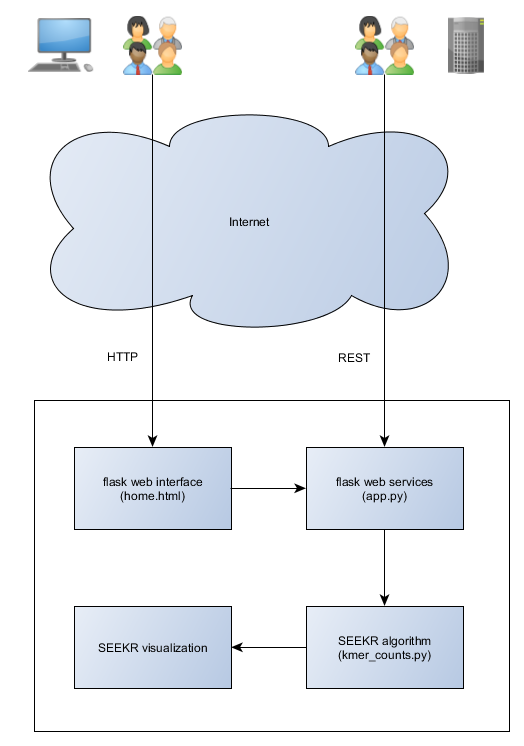
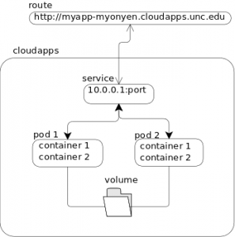

Architecture
SEEKR Web Portal Architectural Diagram

The architecture follows a client-server architecture for web requests and a Service Oriented Architecture (SOA) for RESTful web services. A typical user will access the application through the web client which users the web interface which is implemented in the Flask microframework. The web client's main interface is found at home.html and will make calls to the RESTful web services in order to run the SEEKR algorithm. Power users can call these web services directly through the web services interface which is also implemented in Flask. The SEEKR algorithm component will run the algorithm on user selected sequences with the specified options and return raw results. A future visualization component will take the raw results and render them to graphics which will aid in interpreting the results.
Decomposition
Modules
The current modules are described above (web interface, web services, and the SEEKR algorithm). The SEEKR algorithm code was originally written by the client, but has been modified some to run on our server and we will likely make future changes to this code.
Processes
We run on a multi-threaded architecture provided by the Flask framework where HTTP (and thus our RESTful web services) can be handled by separate processes. The stateless nature of HTTP allows these to run concurrently.
Data
We currently do not persist data as part of our current design.
Design Decisions
Persistence
Our current implementation does not persist user specific data, which limits the ability for users to maintain sequences over sessions, execute long-running jobs, and continue work from other other machines.
SOA Architecture
Our architecture enables power users to leverage our API directly and bypass the web client if desired.
Deployment

(diagram from https://help.unc.edu/help/carolina-cloudapps-overview/)